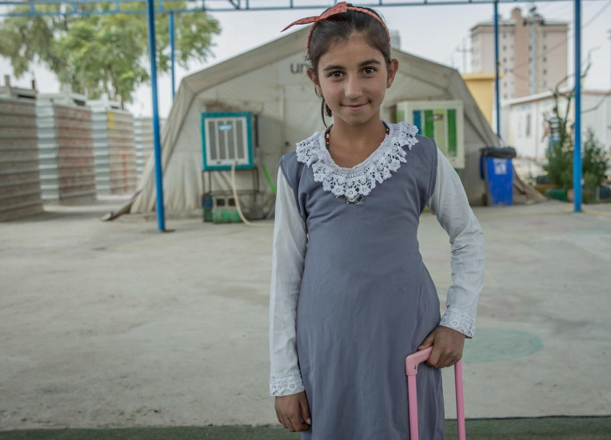

AKROSH COMPANY
AKROSH COMPANY
the organisation of ARA Foundation for Charity

12 YEAR OLD GIRL
Western India now a destination for liver transplant…..
Zainab Omer is a 12 year old girl from Iraq. A few months ago she developed shortness of breath and had to take off from school.
Tests at the local doctors’ showed that her chest was full of fluid and she was jaundiced. She had advanced cirrhosis of the liver due to auto-immune hepatitis, a condition in which the body makes antibodies to the liver causing damage over a period of time.
If the diagnosis is made on time, steroids can be used to prevent further damage but it was already too late for Zainab. Her parents emailed her reports to the liver transplant team and she was called for a living donor liver transplant.
Her mother would be donating part of her liver to her. When she arrived in Mumbai she was gasping for breath and the X ray showed a completely white chest. She was admitted to the ICU and medically stabilized. Her mother donated part of her liver to her and she had a successful living donor liver transplant on 2 nd January, 2015. She recovered well and is soon to return home